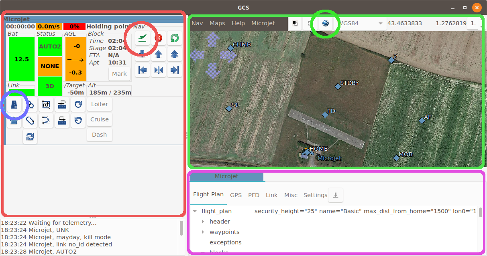

Flight Simulation¶
Launch the simulation¶
In the paparazzi center, select the Microjet aircraft in the A/C combobox of the configuration panel.
Select the sim target, and click Build. This should build without errors in the console panel, and finish with “DONE”.
Select the Simulation session in the execution panel, and click Execute.
A new window opens, this is the GCS (Ground Control Station).
The GCS layout can be changed, but in this layout there are 3 very important panels:
the red one (left) is the strips panel. Each aircraft have its own strip, which display the state of the aircraft, and let you send commands.
the green panel (top right) is the map. The default background is black. Click on the google earth icon (green circle) to load the tiles.
the purple panel features various widgets. The first of these describes the flight plan.
Now, lets launch the drone:
On the purple panel, you should see that the “Holding Point” block is highlighted. This is the current block. Wait few seconds if the current block is “Wait GPS” or “Geo init”.
In the strip, click on the button in the blue circle. This is a shortcut button for the “Takeoff” block in the flight plan. You can also double click on the “Takeoff” block in the flight plan.
In real life, we would now launch the drone. In simulation, there is a magic button to do so in the strip. Click on the button in the red circle.
The drone should now move, and the current block will change to “Standby”.